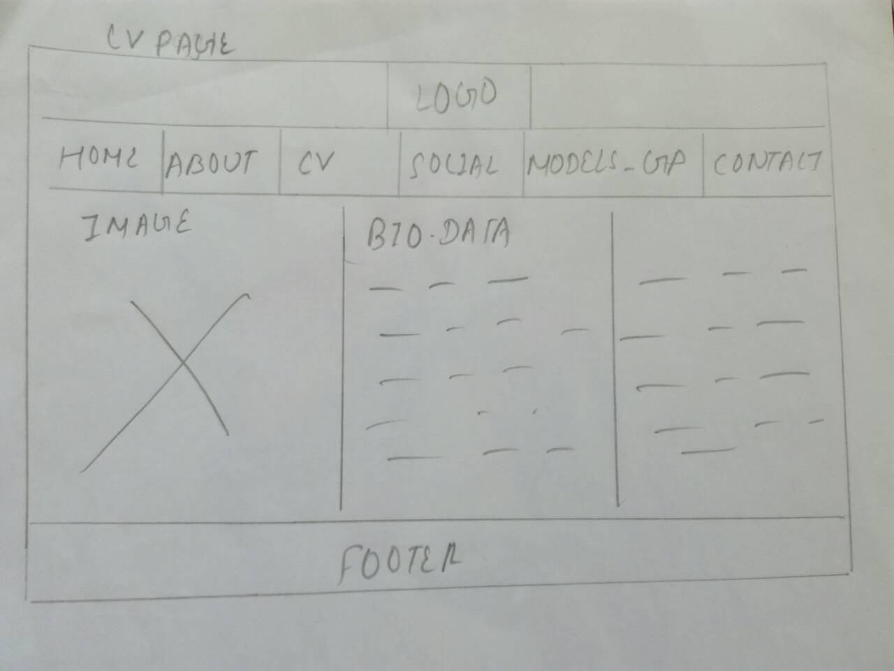
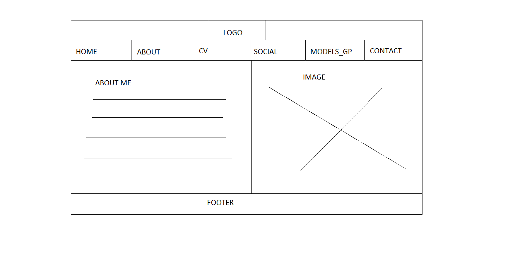
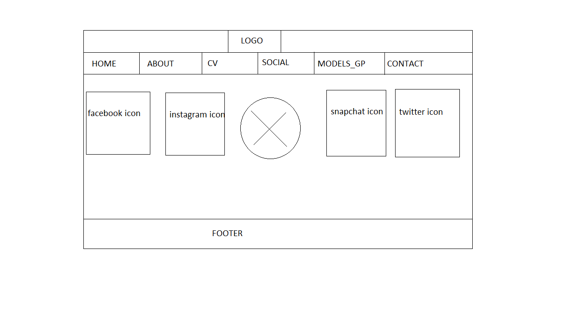

Introduction
This webpage is about designing a website by using HTML and CSS codes. After studying ten weeks I come to know how to design simple website using CSS and HTML codes .For this assignment I had searched different websites and got to know about modern layout of website. With the help of w3schools I did learn some tricks so, I was benefited to design my website.I have added some animation on image ,menu bar to make my website real and attractive.
Designs
wireframe
Before wire framing my website I have researched on Google. After researching I got knowledge of wire framing .Then I design the page of all the topics included in the project assignment.
Wireframe of homepage:
The design of my homepage include logo, navigation bar , section bar and footer bar.logo was made with the help of photoshop .In navigation bar home page, about page,cv page,social page,contact page and models_gp page each have different pages. Section bar is divided into two parts. 1st one div is for image and another div for my information and below the information of section part there is a link button. When you click on it you will go on about page and at last footer part I had simply left section for writing the copyright text. footerBackground is white.
wireframe of aboutpage:
The design of about page is as similar to homepage,logo part,navigation bar and footer part are same.But image placement is in different side and in about page it have explain more about me .
wireframes of contactpage:
When you clicked on contact page on navigation bar contact page will appear . All contents are similar but in section part there are two div first div for contact information and second div for map it is for location.
wireframe of socialpage:
When you clicked on social page on navigation bar social page will appear. All contents are similar except section part.In section part I had keep the icons of facebook ,instagram,snapchat.When you click on them social media link will .image will be rotate 360 degree.
wireframe of cvpage:
cvpage is just like the layout of aboutpage .In cv page there are three sections Instead of paragraphing I have inserted listing ,images and my biodata
mockups
After completing the wireframe design I moved to do mockup design and in there I have changed font-family ,font-color ,background color, button colors and inserted some pictures of mine as well and also after that added some real content to make it look like the final completed design of my web site.
mockup of homepage:
This is the mockup for homepage.logopage was made with the help of photoshop with two different colors. In navigation bar background code color is used and at hover colour will change font-size will increase there is a animation . In section part image are keep as a backgorund.There are two div one is used for image and another div used for information.Animation property is used in image.In the second div there is link button animation is used ,by clicking it about page can appear.For larger and attractive font i downloaded from google ,link is in homepage.

mock of about page:
Mockup of homepage and about page are almost similarly but heading is different color and image too. And replacement of image is also different.
mock of cv page:
Logo ,navigation bar and footer bar are similar as homepage. But section part is different there are two div one is for image and another is for my bio data.for information heading sky blue color is used.Section background is image.

mockup of social page:
Social bar is different from other pages . In section part social icon images were kept from google social icons images.In the middle of icons I have use my pictures and pictures will rotate round by animation property
mockup for models_gp:
I have design Models_gp as a documented page.i have describe all about my webpage designing experience. I have keep wireframe design ,mockups,screenshot of webpage,conclusion,refrences.
mockup for contact page:
In contact page I have use two div one is for contact and another div for google map which help visitors to find a location. In contact heading skyblue color is used.i have keep map from google by embed and copy link in html.

screenshot of all pages
I have done screenshot of all my website pages.
screenshot of home page:
screenshot of about page:

screenshot of cv page:
screenshot of social page:
screenshot of contact page:
conclusion
At end I learned how to use css and html property to make a simple and friendly website. Different images,map ,animations were included to make a website. with the help of this assignment now my doubt are clears. I built more confident . now I can design my website more confidently. I am able to use material design .while doing this I got habit of searching in google.now I am able to work in team. Team coordination built up.All pages were made responsive because user can easily search the website by phone or tab.from this assignmnet now i can make a simple website by using css properties
Testing
Validation Of Good Work
validation is important to do after completing the website .It check the codes whether there are error or warning.As it important i have check all the codes from w3 validator.And i correct all the error.All the screenshot of validation before error and after error are as follows:
Screenshot of all pages Before error are belows
Homepage
About page:
Cv page:
Social page:
Contact page:
All pages are error free except contact page there is error on map image code so, i have included only four screenshot of error free code.
home page:
about page:
cv page:
social page:
contact page:
Refrences
W3schools.com.(1999)THEWORLD’SLARGES TWEBDEVELOPERSITE.[ONLINE].Avalable from:https://www.w3schools.com/ [Accessed 24 March 2017]
Freepik. 2018. Free exclusive vectors by Freepik. [ONLINE] Available at: https://www.freepik.com/index.php?goto=74&idfoto=861762&term=pattern. [Accessed 16 April 2018].
CSS Animations. 2018. CSS Animations. [ONLINE] Available at: https://www.w3schools.com/css/css3_animations.asp. [Accessed 16 April 2018].